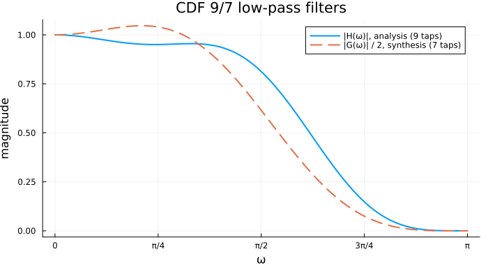
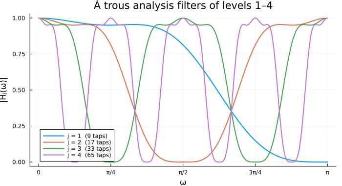
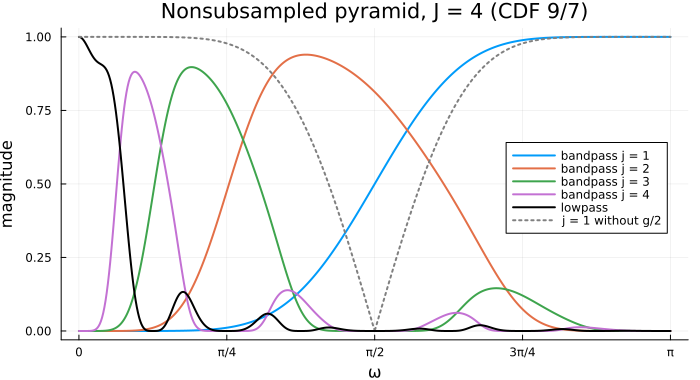
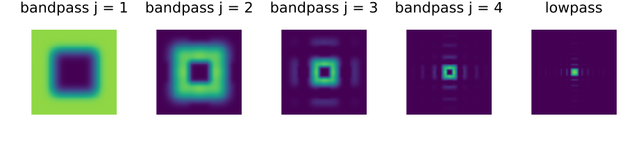
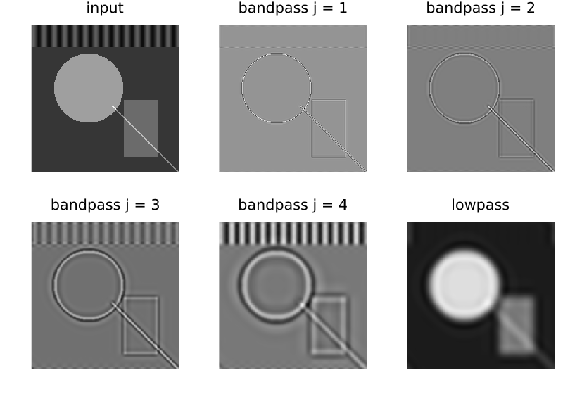

Theory
The examples on this page use Plots.jl and FFTW.jl besides this package:
using MultiscaleFilterBanks: FilterPair, CDF97, upsample_filter
using Plots, FFTW
# Frequency response of a filter whose centre tap sits at (length + 1) ÷ 2,
# i.e. of the centred convolution the pyramids apply.
dtft(f, θ) = sum(f[l] * cis(-θ * (l - (length(f) + 1) ÷ 2)) for l in eachindex(f))
ω = range(0, π; length = 512)
πticks = ([0, π / 4, π / 2, 3π / 4, π], ["0", "π/4", "π/2", "3π/4", "π"])Scale and direction
A wavelet transform splits a signal by scale: every level separates the detail of one frequency octave from a coarser approximation, and repeats on the approximation. In two or more dimensions a separable wavelet has only three (in 2-D) or seven (in 3-D) orientations per scale, so a smooth curved edge is spread over many coefficients at every scale. Multiscale, multidirectional transforms split each octave further by direction, so that one subband holds edges of one scale and one orientation:
┌──────────────┐ bandpass_1 ┌─────────────────────┐
input ──►│ pyramid │─────────────►│ directional bank 1 │──► subbands of scale 1
│ level 1 │ └─────────────────────┘
└──────┬───────┘
│ lowpass_1
┌──────▼───────┐ bandpass_2 ┌─────────────────────┐
│ pyramid │─────────────►│ directional bank 2 │──► subbands of scale 2
│ level 2 │ └─────────────────────┘
└──────┬───────┘
│ lowpass_2 ⋯ lowpass_J ──► coarse subband| Package | Pyramid | Directional stage |
|---|---|---|
| Contourlets.jl | Laplacian or nonsubsampled pyramid | directional filter bank: $2^L$ wedges in the frequency plane [5, 3] |
| Surfacelets.jl | multiscale pyramid | N-D directional filter bank: hourglass-shaped regions in 3-D frequency space [6] |
| Shearlets.jl (NSST) | nonsubsampled pyramid | shearing filters on a pseudo-polar grid [7] |
The pyramid is the shared part, and this package holds it.
The biorthogonal filter pair
A FilterPair holds two 1-D low-pass filters: the analysis filter $h$ and the synthesis filter $g$. The default CDF97 is the Cohen–Daubechies–Feauveau 9/7 pair [1], the irreversible wavelet of JPEG 2000. $h$ has unit gain at DC, $H(0) = 1$; $g$ has $G(0) = 2$, which compensates the ×2 upsampling of the decimated pyramid below. Both nearly vanish at the Nyquist frequency $ω = π$:
plot(ω, abs.(dtft.(Ref(CDF97.h), ω)); label = "|H(ω)|, analysis (9 taps)",
xticks = πticks, xlabel = "ω", ylabel = "magnitude", title = "CDF 9/7 low-pass filters")
plot!(ω, abs.(dtft.(Ref(CDF97.g), ω)) ./ 2; label = "|G(ω)| / 2, synthesis (7 taps)", ls = :dash)
Any other pair can be used where the downstream transforms take one, for example the linear spline pair:
spline = FilterPair([1.0, 2.0, 1.0] ./ 4, [1.0, 2.0, 1.0] ./ 2)
sum(spline.h), sum(spline.g)(1.0, 2.0)The Laplacian pyramid
One level of the Laplacian pyramid of Burt and Adelson [2] filters the input $x$ with $h$, decimates by 2 to get the coarse approximation $c$, then predicts $x$ from $c$ by upsampling and filtering with $g$. The bandpass $b$ is the prediction error:
\[c = {\downarrow_2}\,(h * x), \qquad b = x - g * ({\uparrow_2}\, c), \qquad x = b + g * ({\uparrow_2}\, c).\]
The last identity reconstructs $x$ exactly for any pair. Do and Vetterli [3] showed that the pyramid is a frame, tight when the filters are orthogonal, and that this usual reconstruction is suboptimal: for general filters they give a projection-based reconstruction that is provably better in the presence of noise. Repeating on $c$ gives the multiscale pyramid: $J$ bandpasses, one per octave, and a coarse lowpass. The redundancy in 2-D is only $1 + 1/4 + 1/16 + … < 4/3$.
The nonsubsampled pyramid and the à trous algorithm
Decimation makes the Laplacian pyramid shift-variant: shifting the input by one sample changes the coefficients by more than a shift. For denoising and enhancement one drops the decimation, which needs the filters to change from level to level instead. Level $j$ uses $h$ and $g$ upsampled by $2^{j-1}$: $2^{j-1} - 1$ zeros inserted between the taps (upsample_filter), so the frequency response is compressed by $2^{j-1}$. This is the algorithme à trous ("with holes") of Holschneider et al. [4], which Shensa [8] showed computes the undecimated wavelet transform; the nonsubsampled contourlet transform uses it for its pyramid [9].
upsample_filter([1.0, 2.0, 3.0], 3)7-element Vector{Float64}:
1.0
0.0
0.0
2.0
0.0
0.0
3.0p = plot(; xticks = πticks, xlabel = "ω", ylabel = "|Hⱼ(ω)|",
title = "À trous analysis filters of levels 1–4")
for j in 1:4
hj = upsample_filter(CDF97.h, 2^(j - 1))
plot!(p, ω, abs.(dtft.(Ref(hj), ω)); label = "j = $j ($(length(hj)) taps)")
end
Without decimation the synthesis filter's gain of 2 is no longer needed: it would make the prediction twice the input on smooth regions. So the nonsubsampled pyramid uses $g/2$. With $A_j = \prod_{i<j} H_i$ the lowpass that reaches level $j$ and $S_j = \prod_{i<j} G_i/2$ its synthesis counterpart, the bandpass of level $j$ and the coarse lowpass are
\[B_j(ω) = A_j(ω)\,\bigl(1 - \tfrac12 G_j(ω) H_j(ω)\bigr), \qquad L(ω) = A_{J+1}(ω),\]
and the reconstruction telescopes to the identity for any pair:
\[\sum_{j=1}^{J} S_j B_j + S_{J+1} A_{J+1} = \sum_{j=1}^{J} \Bigl( \prod_{i<j} \tfrac12 G_i H_i - \prod_{i\le j} \tfrac12 G_i H_i \Bigr) + \prod_{i\le J} \tfrac12 G_i H_i = 1 .\]
J = 4
H(j, θ) = dtft(upsample_filter(CDF97.h, 2^(j - 1)), θ)
G(j, θ; scale = 0.5) = scale * dtft(upsample_filter(CDF97.g, 2^(j - 1)), θ)
A(j, θ) = prod((H(i, θ) for i in 1:(j - 1)); init = 1.0 + 0im)
S(j, θ; scale = 0.5) = prod((G(i, θ; scale) for i in 1:(j - 1)); init = 1.0 + 0im)
B(j, θ; scale = 0.5) = A(j, θ) * (1 - G(j, θ; scale) * H(j, θ))
p = plot(; xticks = πticks, xlabel = "ω", ylabel = "magnitude",
title = "Nonsubsampled pyramid, J = $J (CDF 9/7)", legend = :right)
for j in 1:J
plot!(p, ω, abs.(B.(j, ω)); label = "bandpass j = $j")
end
plot!(p, ω, abs.(A.(J + 1, ω)); label = "lowpass", color = :black)
plot!(p, ω, abs.(B.(1, ω; scale = 1.0)); label = "j = 1 without g/2", ls = :dot, color = :gray)
Each bandpass now covers roughly one octave, from $[π/2, π]$ at $j = 1$ down to $[π/16, π/8]$ at $j = 4$. The dotted curve shows the level-1 "bandpass" without the rescale: it does not vanish at DC, so it is dominated by lowpass content. Perfect reconstruction, checked numerically on the grid:
rec(θ) = sum(S(j, θ) * B(j, θ) for j in 1:J) + S(J + 1, θ) * A(J + 1, θ)
maximum(abs(rec(θ) - 1) for θ in ω)2.220446049250313e-16In two and three dimensions: masks on the DFT grid
The downstream pyramids apply the 1-D pair along every axis. With periodic boundaries a separable convolution is a pointwise product on the DFT grid, so the $D$-dimensional pyramid becomes a set of masks, each a broadcast of per-axis responses:
\[B_j(\boldsymbol ω) = \prod_d A_j(ω_d)\,\Bigl(1 - \prod_d \tfrac12 G_j(ω_d) H_j(ω_d)\Bigr), \qquad L(\boldsymbol ω) = \prod_d A_{J+1}(ω_d).\]
Each 2-D bandpass is a square annulus in the frequency plane, one octave wide:
# Responses on the n bins of an FFT axis, in FFT order, and their 2-D outer products.
bins(n) = 2π .* (0:(n - 1)) ./ n
outer(f, n) = f.(bins(n)) .* transpose(f.(bins(n)))
analysis_masks(n) = ([outer(θ -> A(j, θ), n) .* (1 .- outer(θ -> G(j, θ) * H(j, θ), n)) for j in 1:J],
outer(θ -> A(J + 1, θ), n))
synthesis_masks(n) = [outer(θ -> S(j, θ), n) for j in 1:(J + 1)]
Bmask, Lmask = analysis_masks(128)
show_mask(M, t) = heatmap(fftshift(abs.(M)); title = t, aspect_ratio = 1, framestyle = :none,
colorbar = false, c = :viridis, clims = (0, 1.2))
plot([show_mask(Bmask[j], "bandpass j = $j") for j in 1:J]..., show_mask(Lmask, "lowpass");
layout = (1, 5), size = (900, 210))
Applied to an image, the pyramid separates its edges by scale, and every subband has the size of the input:
N = 256
img = [begin
r = hypot(x - 100, y - 110)
1.0 * (r < 60) + 0.5 * (abs(x - 190) < 30 && abs(y - 180) < 50) +
0.4 * sin(0.35 * x) * (y < 40) + 0.8 * (abs(x - y) < 1.5 && x > 140)
end for y in 1:N, x in 1:N]
Bmask, Lmask = analysis_masks(N)
Smask = synthesis_masks(N)
X = fft(img)
bands = [real(ifft(Bmask[j] .* X)) for j in 1:J]
low = real(ifft(Lmask .* X))
show_img(a, t) = heatmap(a; yflip = true, aspect_ratio = 1, framestyle = :none,
colorbar = false, c = :grays, title = t)
plot(show_img(img, "input"), [show_img(bands[j], "bandpass j = $j") for j in 1:J]...,
show_img(low, "lowpass"); layout = (2, 3), size = (800, 560))
The synthesis masks undo it to rounding error:
Y = sum(Smask[j] .* fft(bands[j]) for j in 1:J) + Smask[J + 1] .* fft(low)
maximum(abs, real(ifft(Y)) - img)8.881784197001252e-16This is how the nonsubsampled transforms of the downstream packages run: the masks are computed once, every subband costs one product and one inverse FFT, and the directional bank of each level multiplies its bandpass by further masks. Because the subbands are independent, their FFTs are spread over Julia's threads on the CPU; on a GPU the same broadcasts and FFTs run on the device.
Boundary handling
Transforms that filter in the signal domain rather than on the DFT grid extend the input beyond its borders. Three extensions are shared by the 2-D and 3-D convolution primitives: periodic, whole-sample symmetric (the border sample is not repeated: $x_2, x_1, x_2, x_3, …$) and zero. Symmetric extension of a symmetric filter (both CDF 9/7 filters are) keeps a smooth image smooth at its borders, so it introduces no artificial edges.
Real filters, complex data
The filters are always real, data can be real or complex. Complex data is filtered with the real filters directly (complex × real), never by promoting the filters to complex. Every transform is therefore exactly real-linear: the transform of $x + iy$ equals the transform of $x$ plus $i$ times the transform of $y$, bit for bit.
References
- A. Cohen, I. Daubechies, and J.-C. Feauveau, "Biorthogonal Bases of Compactly Supported Wavelets", Communications on Pure and Applied Mathematics, 45(5):485–560, 1992. doi:10.1002/cpa.3160450502
- P. J. Burt and E. H. Adelson, "The Laplacian Pyramid as a Compact Image Code", IEEE Transactions on Communications, 31(4):532–540, 1983. doi:10.1109/TCOM.1983.1095851
- M. N. Do and M. Vetterli, "Framing Pyramids", IEEE Transactions on Signal Processing, 51(9):2329–2342, 2003. doi:10.1109/TSP.2003.815389
- M. Holschneider, R. Kronland-Martinet, J. Morlet, and Ph. Tchamitchian, "A Real-Time Algorithm for Signal Analysis with the Help of the Wavelet Transform", in Wavelets: Time-Frequency Methods and Phase Space, Springer, 1989, pp. 286–297. doi:10.1007/978-3-642-75988-8_28
- M. N. Do and M. Vetterli, "The Contourlet Transform: An Efficient Directional Multiresolution Image Representation", IEEE Transactions on Image Processing, 14(12):2091–2106, 2005. doi:10.1109/TIP.2005.859376
- Y. M. Lu and M. N. Do, "Multidimensional Directional Filter Banks and Surfacelets", IEEE Transactions on Image Processing, 16(4):918–931, 2007. doi:10.1109/TIP.2007.891785
- G. Easley, D. Labate, and W.-Q. Lim, "Sparse Directional Image Representations Using the Discrete Shearlet Transform", Applied and Computational Harmonic Analysis, 25(1):25–46, 2008. doi:10.1016/j.acha.2007.09.003
- M. J. Shensa, "The Discrete Wavelet Transform: Wedding the À Trous and Mallat Algorithms", IEEE Transactions on Signal Processing, 40(10):2464–2482, 1992. doi:10.1109/78.157290
- A. L. da Cunha, J. Zhou, and M. N. Do, "The Nonsubsampled Contourlet Transform: Theory, Design, and Applications", IEEE Transactions on Image Processing, 15(10):3089–3101, 2006. doi:10.1109/TIP.2006.877507